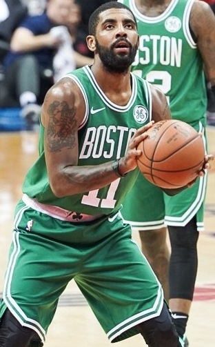

KYRIE IRVING

Kyrie Andrew Irving is an American professional basketball player for the Brooklyn Nets of the National Basketball Association.
He was named the Rookie of the Year after being selected by the Cleveland Cavaliers with the first overall pick in the 2011 NBA draft.
Born: 23 March 1992 (age 29 years), Melbourne, Australia
Height: 1.88 m
Current teams: Brooklyn Nets (#11 / Point guard, Shooting guard), United States of America
Children: Azurie Elizabeth Irving
Parents: Drederick Irving, Elizabeth Irving
Siblings: Asia Irving, London Irving